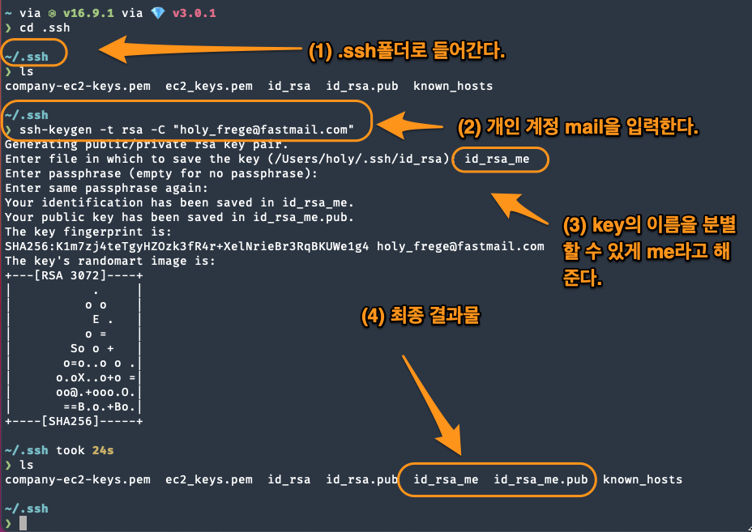
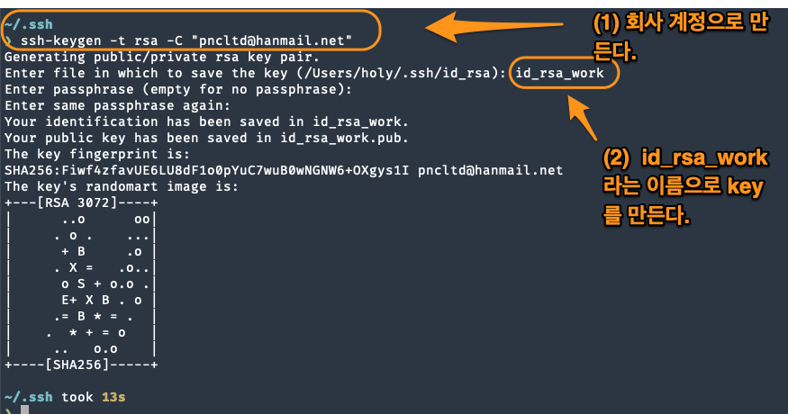
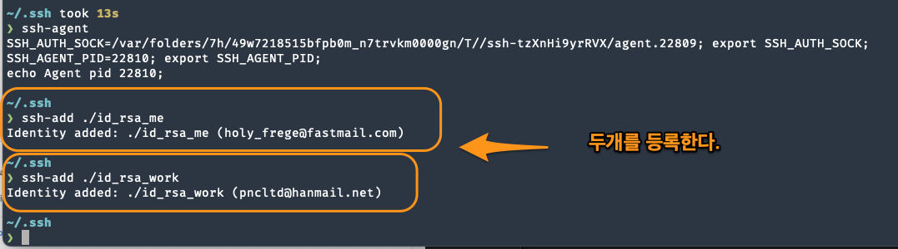
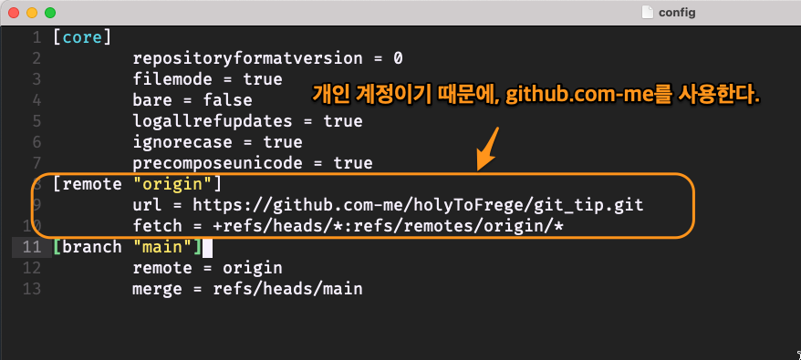
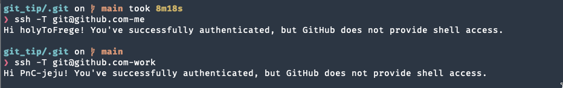

2개의 github 계정 사용하기
Table of Contents
1 issue
나는 회사 github계정과 개인 github계정이 있다. ssh는 한개의 public key만 유지하고 있어서, 다른 계정은 access가 힘든 문제가 있었다. 이 문제를 해결하고자 한다. https://velog.io/@sonypark/GitHubSSH%EB%A5%BC-%EC%9D%B4%EC%9A%A9%ED%95%B4-%EC%97%AC%EB%9F%AC%EA%B0%9C%EC%9D%98-%EA%B9%83%ED%97%88%EB%B8%8C-%EA%B3%84%EC%A0%95-%EC%82%AC%EC%9A%A9%ED%95%98%EA%B8%B0-6mk3iesh0u 를 참조했다.
2 1_ssh key 생성
.ssh폴더에서 2개의 ssh public key를 만들 것이다. 만드는 과정은 아래 그림을 참조한다.

Figure 1: github 개인

Figure 2: github 회사
3 2_ssh-agent사용
ssh-agent는 private key와 public key를 관리하는 daemon이다. 일반적으로 mac에는 기본적으로 ssh-agent가 떠 있다. agent는 등록된 key를 사용해서 접속해야 하는 경우, 자동으로 처리를 해주기 때문에, ssh-agent에 해당 key를 등록해준다. ssh-add를 사용해서 ssh-agent에 등록을 한다.

Figure 3: ssh-agent등록
4 3_public key를 github에 등록
개인 github에는 개인 public key를 등록한다. 회사 github에는 회사 public key를 등록한다. github->settings->ssh keys등록하는 곳에 등록한다.
5 4_ssh config설정
.ssh아래에 config파일을 만든다. 그리고 config파일에서 host와 public key를 명시해야 한다. config설정파일을 꼭 만들어야 하는가?음..이게 무슨 말이냐면? 우리는 보통 ssh test@example.com과 같이 ssh연결을 시도한다. 이 연결에는 숨겨진 동작이 있는데, ssh는 .ssh/id_rsa라는 key파일에서 public key를 사용해서 test란 id로 접속을 시도한다. 즉 ssh key가 자동으로 사용된다는 것이다. ssh 서버가 2대이거나, github계정이 2개라면 하나는 접속하지 못한다. 동일한 ssh key를 사용하기 때문이다. A라는 server에는 id_rsa_me를 사용하고, B라는 server에는 id_rsa_work를 사용한다면, 이를 구분해 줘야 한다. 안그렇다면, 동일한 ssh key를 사용할 것이기 때문이다. 아래와 같이 설정한다. Host는 이름으로 봐도 좋고, HostName은 실제 접속주소(ip or domain)를 의미한다. 주의할 점은 git clone할때 주소는 git@github.com:~~.git으로 하면 안된다. git@github.com-me:로 해야 한다.
Host github.com-me HostName github.com User git IdentityFile ~/.ssh/id_rsa_me
Host github.com-work HostName github.com User git IdentityFile ~/.ssh/id_rsa_work
6 5_git config 설정
- ~/.gitconfig라는 파일을 수정해야 한다. 여기에 기입하면, git global로 설정하는 것과 같다.
- 여러개의 계정을 등록해야 하는데, 방법은 includeIf라는 문장을 사용해서 폴더별로 분류한다.
- default로 하나를 설정해서 [user]로 결정하고, 나머지는 폴더별로 다른 파일로 기술한다.
[user]
email = {YourPersonalGithub}@gmail.com
name = {YourPersonalGithubName}
[includeIf “gitdir:~/Company-git/”]
path = .gitconfig-company

이렇게 project별로 설정을 해주게 된다면, 실제 정상적으로 동작하는지 여부를 테스트하면 된다.
7 6_Test
- 첫번째로 test할 것은 ssh에 설정된 config가 제대로 동작하는지 확인하는 것이다.
- 두번째로 test할 것은 git config 설정이 제대로 되었는가 하는 것이다. 제대로 되어 있다면, git push와 git pull하는데 문제가 없을 것이다. => 문제가 없다.

Figure 5: both
8 7_error
permission error가 나올 경우, 대부분은 ssh-agent에 key가 없어서 발생하는 문제다. 이전에 ssh-add를 통해서 key를 agent에 등록했으나, computer가 다시 부팅되었거나 하면, key가 없어진다. 그래서 다시 ssh-add를 통해서 키를 등록해주어야 한다. 나는 .ssh/config파일에 기술되어 있기 때문에 굳이 ssh-add를 할 필요가 없다고 생각했는데, 그렇지 않은 것 같다.